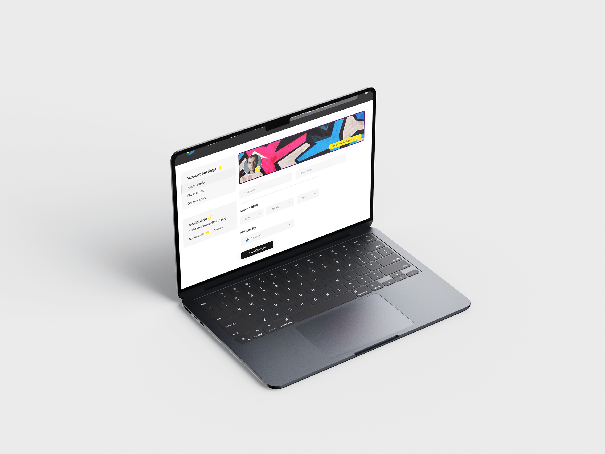
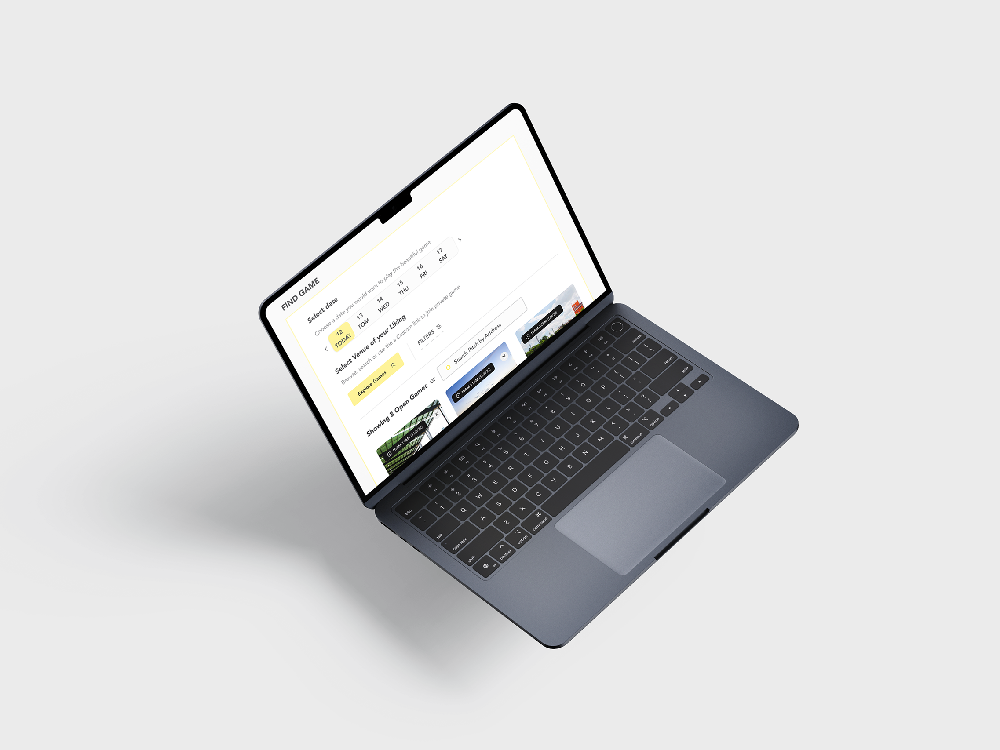
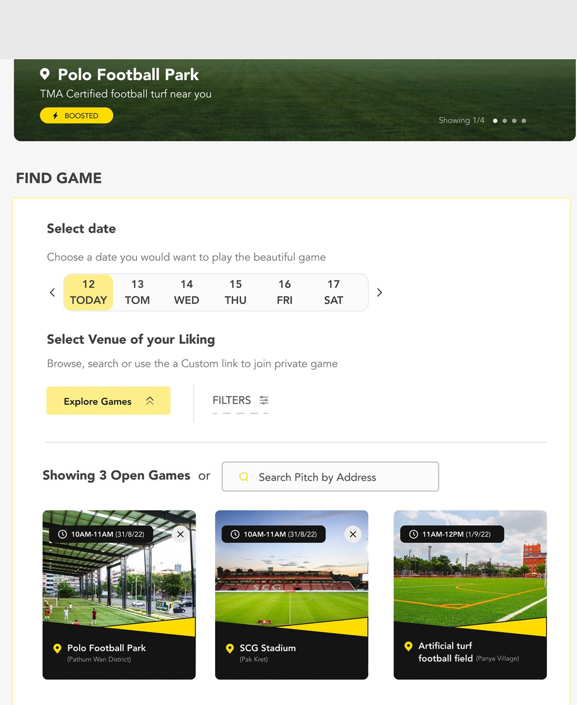
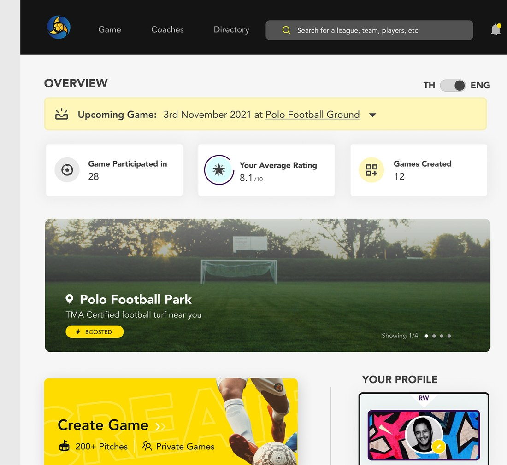

Futee
A matchmaking platform for people who play football for the love of it.
At a glance
0
Screens designed, web & iOS
0
Personas, journey-mapped
0
Research & mapping methods

The product, end to end.
Summary
Futee is an all-in-one platform for finding, creating and joining football games in Bangkok, across a web platform and an iOS app.
This was a team project, not a solo one. My lane was the UX research, the information architecture, the UI system and the visual identity. The stakeholder and player calls were run by the team together rather than outsourced, and the build was handled afterwards by an external development firm.
The whole thing is built for two people who never speak to each other: the person creating a game, and the person looking for one. Every screen has to serve both without either noticing the other's needs.
The problem
Football is a community sport played by people with no way of finding each other.
Once players leave school or university, the pickup game goes with them. Organising one means a group chat, a pitch nobody has vouched for, and a squad of strangers whose skill level you discover at kickoff.
Futee's stakeholders wanted one place to solve all three — venue, squad, and standard — without turning the app into a booking system.
Target users


Desk research, a questionnaire, and calls with stakeholders in Thailand and regular players in Bangkok produced two personas — and they fail in different places. The creator dips at venue selection, with no way to judge a pitch. The player dips waiting to hear back, with no signal that an application went anywhere.

One screen, no navigating to compare.
Insights
Every finding was inverted into a feature, one at a time. "Finding a good game is a coin flip" became ratings visible before you apply. "I don't know if I'm in" became a squad list that fills in front of you.
Nothing entered the product that couldn't be traced back to a quote. It also meant the one place research contradicted the brief — create-then-fill, rather than fill-then-create — was an easy argument to win.
The one argument with the brief
The brief assumed you gather a squad and then book something. Research said the opposite — so this is the decision drawn out, including the version that lost.
Journey map

Problems, inverted

Information architecture

The solution
A date, a pitch, three taps.
Onboarding collects only what changes the match — position, preferred foot, availability — and defers the rest. Matchmaking puts the date strip, the venue and every open game on one screen, so a player never has to navigate in order to compare.
Yellow has exactly one job in the system: it marks the thing you are being asked to decide. Everything else is black, white, and the photograph of the pitch.







What went over
It went to the stakeholders as a system, not a screen set.
Two personas, two journeys, a sitemap traceable back to research, and a UI that holds the same rules whether you are organising a game or joining one. Create-then-fill — the one place research contradicted the brief — was adopted without argument, because the journey map made the case before I did.
It was handed over and built by an external development firm. It ran, and it has since been taken down. I don't have usage figures from the period it was live, and I'd rather say that than imply a launch I can't evidence.
What this case study doesn't have
Worth saying plainly, because a research-led case study should be held to it: there is no usability testing shown here, and no post-launch numbers. The evidence on this page is research → decision, not design → measured result. I also no longer have the participant counts from the questionnaire or the calls.
If I ran it again, a five-person test on the create-then-fill flow would come before the visual system — that flow was the one real disagreement with the brief, and it is the one thing I argued rather than proved.